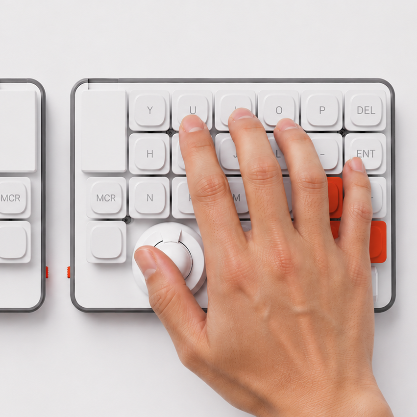
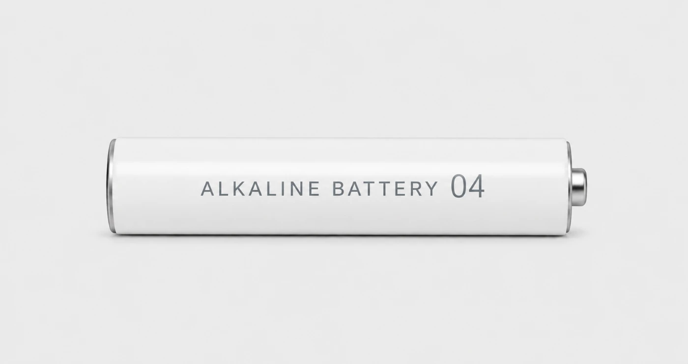
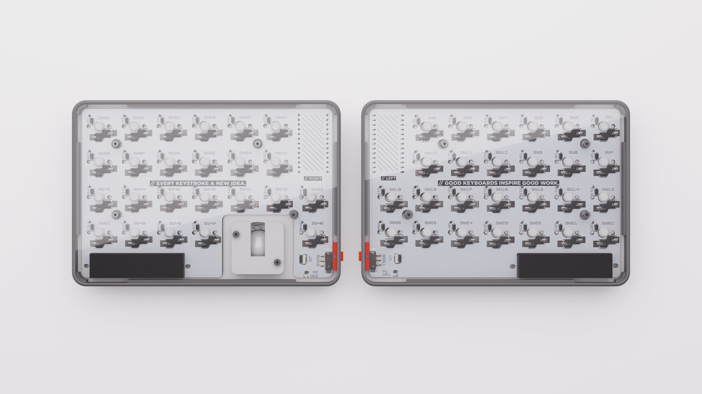
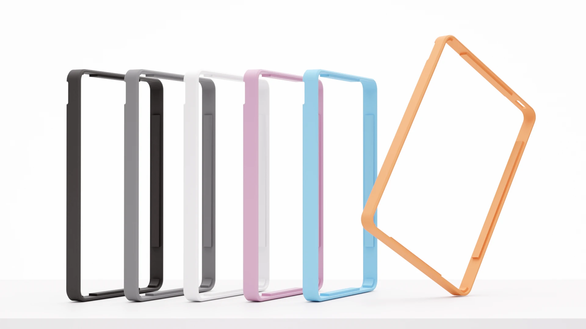
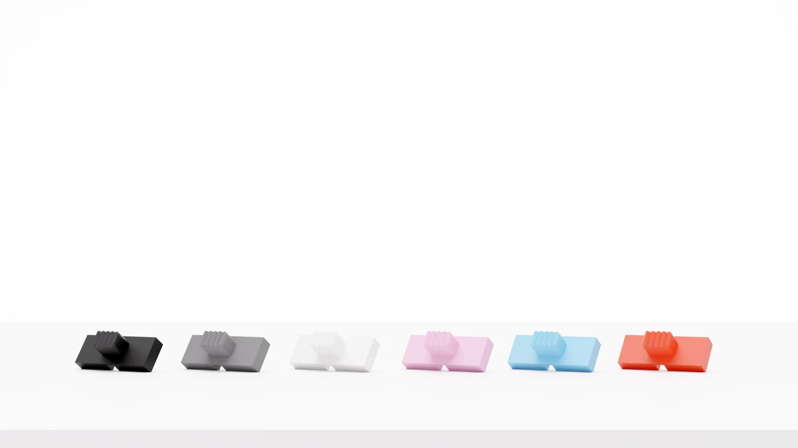
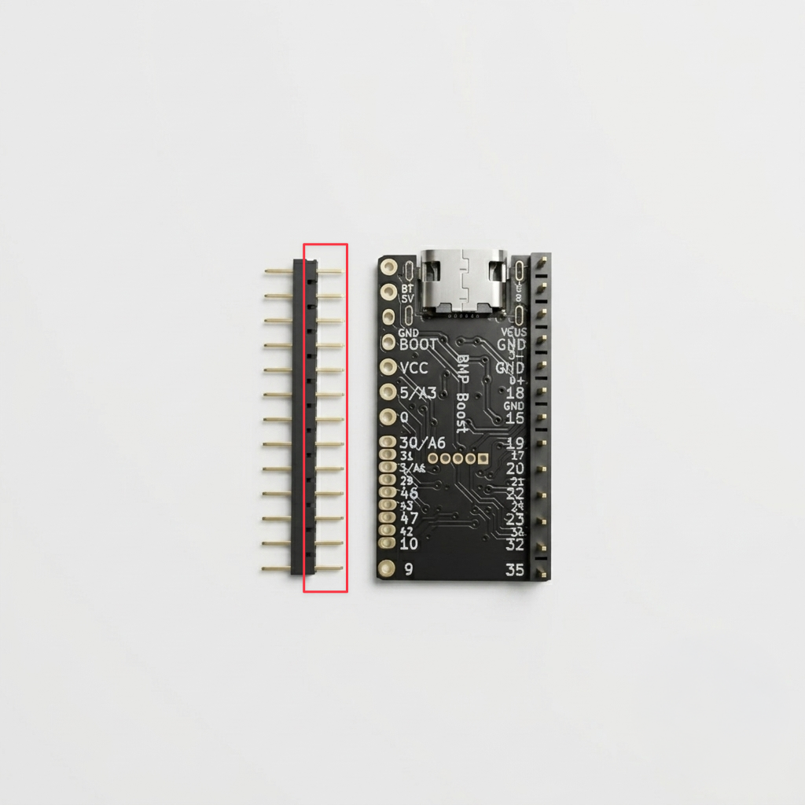

慣れた手の位置に、決定・削除・十字キー・スペース、自然に指がのびる場所に置きました。いつもの作業が、少しだけ楽しくなります。
自然に手を置いた時の親指の位置にトラックボールがあります。
文字を打つことと、ポインタを動かすことが、自然につながります。

電源は、市販の単4電池。リポバッテリーを使わないので、保管も交換も気軽にできます。むずかしい取り扱いはいりません。毎日の道具として、安心して使えます。

背面は、基板がそのまま見えるスケルトン仕様。使いやすさだけでなく、見て、触れて、少し嬉しくなる。毎日使う道具だからこそ、そんな楽しさも大切にしました。

本体のふちを彩るバンパーをその日の気分やデスクの雰囲気に合わせて、着替え。いつもの道具が、ちょっと新鮮に見えてきます。
STL データを配布しています。3D プリンターをお持ちの方は、印刷してお楽しみください。お持ちでない方は、Booth でも販売していますのでご利用ください。


ZEN は ZMK ファームウェアを採用。購入後はブラウザの Keymap Editor から、すべてのキーとレイヤーを自由に書き換えられます。下の配置は、キットに最初から書き込まれているデフォルトの一例です。
Keymap Editor の使い方・セットアップガイド→ レイヤーを切り替えると、同じキーの役割が変わります。ZMK ならこの割り当ても、すべて自由に。
※ 上記はおすすめの一例です。19mm トラックボール・対応するキースイッチ／キーキャップであれば、お好みのものをお使いいただけます。
はんだ付けや基板の組み立ては必要ありません。 用意したパーツを取り付けて、つなぐだけです。
対応コントローラを ZEN 本体に差し込みます。コンスルーには差し込む向きがあります。赤い枠で示した、穴が空いている方を対応コントローラに差し込むようにしてください。

キースイッチ、キーキャップ、トラックボール、単4電池を取り付けます。※ キースイッチをはめ込む際は向きに注意してください。ピンが曲がる・折れる、ソケットの接触部が曲がる可能性がありますので、真上方向からゆっくりと押し込んでください。初回は硬い場合があります。
右手キーボードのスイッチを ON、続けて左手を ON の順で電源を入れ、PC / Mac の接続設定画面を開いてください。「ZEN」と表示された機器を接続するとペアリングされます。これで完成です。
| 種類 | 左右分割型ワイヤレスキーボード（トラックボール搭載） |
|---|---|
| キー数 | 左右合計 50キー |
| 本体サイズ | 縦 100 × 横 144 mm （片手側） |
| 高さ | 本体 10 mm / キートップ含 19.8 mm / トラックボール含 29.8 mm |
| ファームウェア | ZMK / Keymap Editor でキー配置を自由に編集 |
| ポインティング | 右手側トラックボール |
| 対応センサー | PMW3610 / PAW3222 ※ 付属しているセンサーは PMW3610 です。 ※ PAW3222 をご希望の場合は こちら からご購入ください。 |
| 接続方式 | ワイヤレス / 対応コントローラ |
| 電源 | 単4アルカリ乾電池（リポバッテリー不使用） |
| 対応コントローラ | 別途ご用意 |
製品のことから、組み立て・接続のつまずきまで、気になる点をまとめました。
普段使いに近いキー配置とトラックボール位置を活かし、無理なく使い始められることを目指した分割キーボードです。文字入力とポインタ操作を、手を大きく動かさず自然につなげられるように設計しています。
基本的な組み立てと設定が必要です。頒布予定キットでは、はんだ作業は済ませた状態ですので、対応コントローラ・キースイッチ・キーキャップ・トラックボール・電池の取り付けのみを行っていただきます。
頒布予定キットでは、購入者さまによるはんだ付けは不要な構成を想定しています。必要な作業内容は頒布時の組立ガイドに記載します。
対応コントローラ・キースイッチ・キーキャップ・19mm トラックボール・単4電池は別途用意する想定です。最終的な同梱物は頒布ページで案内します。
19mm ボールを想定しています。色や素材によってセンサーの反応が変わる場合があるため、動作確認済みのものを推奨します。
※ ボールによって大きさがほんの少し異なることがあり、稀に反応しない、または反応しづらいボールがあります。あらかじめご了承ください。
対応コントローラを使用することで、デバイスとの接続で利用する想定です。USB 接続での確認や設定も行えます。現在ご用意しているファームウェアでは、最大4台の機器を登録し、キー操作でワンタッチで切り替えられます。
ステータス LED は、主に PC / Mac との接続状態の目安を表示します。接続待機中は一定間隔で点滅し、接続が確立したタイミングで短時間点灯します。
※ 左右間の接続状態や、現在の接続チャンネル番号を直接表示するものではありません。
※ 上記は、こちらで用意しているデフォルトのファームウェアを使用した場合の挙動です。ファームウェアを書き換えたり設定を変更した場合は、LED の点灯・点滅や接続時の挙動が異なる場合があります。
接続している端末や使用状況によって大きく異なりますが、単4電池で数カ月は使い続けられるよう設計しています。
実機を触れない方向けに、等倍印刷用のサイズシートをご用意しています。下記からダウンロードいただけます。印刷時は「実際のサイズ」「100%」「拡大縮小なし」を選び、確認線や本体寸法で等倍になっているか確認してください。
サイズシート（PDF）をダウンロードはい、ご用意しています。ケースなどの STL データは下記のリポジトリで配布しています。3D プリンタでの出力や、カスタムにご活用ください。
STL データを GitHub で見るBOOTH で頒布しています。下記のショップページからご購入いただけます。正式な頒布日時・数量・価格は X および紹介サイトでも案内します。
BOOTH で購入するまず、電池の向きと残量を確認してください。次に、電源スイッチが ON になっているか、対応コントローラが正しい向きで差し込まれているかを確認してください。可能であれば USB 接続でも反応するか確認してください。
接続先の古いペアリング情報を削除し、ZEN の電源を入れ直してください。電池残量が少ない場合も不安定になることがあるため、新しい電池でも確認してください。
ZEN が表示されるのに接続できない場合は、BT操作レイヤーで BT_CLR_ALL を実行し、接続先側でも ZEN を削除してから再ペアリングしてください。別の PC やスマートフォンで試すと、接続先環境の影響かどうかも確認できます。
それでも改善しない場合は、お手数ですがファームウェアリセットを行ってください。
手順は、設定リセット・ペアリング情報の初期化をご覧ください。
反応しない側の電源・電池残量・接続状態を確認してください。デバイスとの接続の場合は、一度ペアリング情報を削除して再接続してください。USB 接続で左右それぞれの動作を確認すると、接続側の問題か本体側の問題かを切り分けやすくなります。
改善しない場合は、設定リセット・ペアリング情報の初期化をお試しください。
キースイッチが奥まで差し込まれているか、ピンが曲がっていないかを確認してください。別のキースイッチに差し替えて反応する場合は、スイッチ側の問題である可能性があります。キーマップを変更している場合は、初期状態のファームウェアでも確認してください。
また、ソケット内の接触パーツが変形してしまった可能性もあります。その場合は、下記のリンクを参考に調整してみてください。
ソケット接点の調整方法を見る19mm ボールが正しく乗っているか、ボールやセンサー周辺にホコリがないかを確認してください。ボールの色や素材によって反応が変わる場合があるため、他のボールや明るい色のボールでも試してください。USB 接続で動作するか確認すると、デバイスとの接続側の問題かどうかを切り分けやすくなります。
ボールと支持部にホコリや汚れがないか確認してください。ボールを一度外して、センサーが浮いていたり、ズレていたりしないか確認してください。光沢の強いボールや色の濃いボールでは、センサーの反応が不安定になる場合があります。デバイスとの接続で不安定な場合は、USB 接続でも同じ症状が出るか確認してください。
ステータス LED は、ファームウェアの状態や接続状態によって点灯条件が変わる場合があります。
いずれかのキーを押して数秒待ってください。トラックボールを動かすだけでなく、キー入力も試してください。復帰しない場合は電源を入れ直してください。
頻発する場合は、設定リセット・ペアリング情報の初期化もお試しください。
左右それぞれに正しいファームウェアを書き込んだか確認してください。書き込み後に一度 USB を抜き、電源を入れ直してください。書き込み手順はセットアップガイドをご覧ください。
動かない場合は、設定リセット・ペアリング情報の初期化を行った上で、初期のファームウェアを再度書き込んでください。
settings reset 用ファームウェア（settings_reset-bmp_boost-zmk.uf2）を書き込むことで、キーボード側に保存された設定やペアリング情報を初期化できます。
settings_reset-bmp_boost-zmk.uf2 を書き込みます。（左右）問い合わせ時は、購入時期やロット、使用している対応コントローラ・キースイッチ・キーキャップ・トラックボール・電池の種類、接続方法、接続先の OS や機種、症状が起きる操作と頻度を添えてください。可能であれば写真や動画があると確認しやすくなります。
お問い合わせの前に、一度 設定リセット・ペアリング情報の初期化をお試しいただくと、解決することがあります。
解決しないときは、ファームウェアのリポジトリの Issues もあわせてご確認ください。github.com/E24-GH/zen-firmware